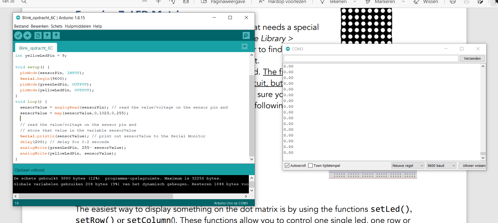
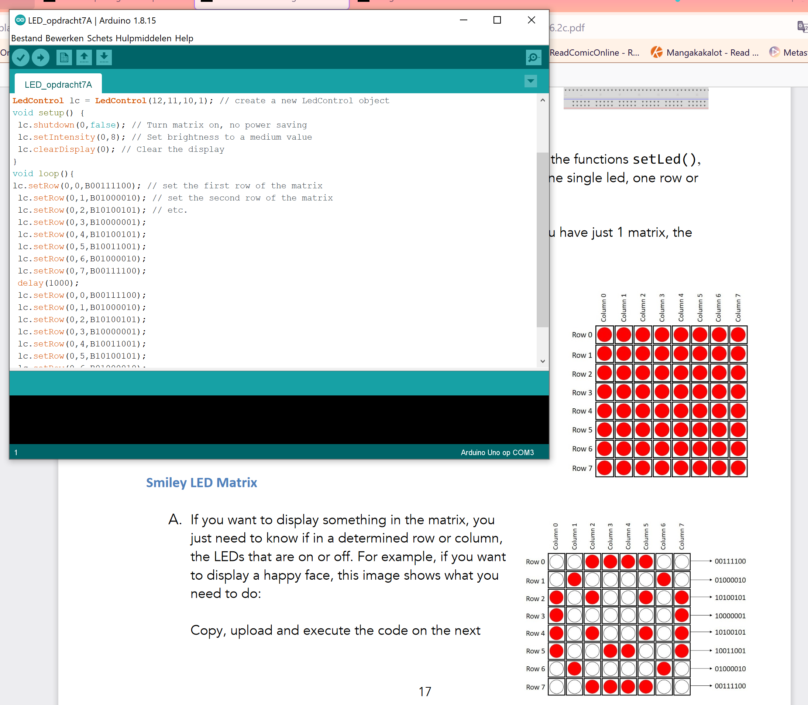
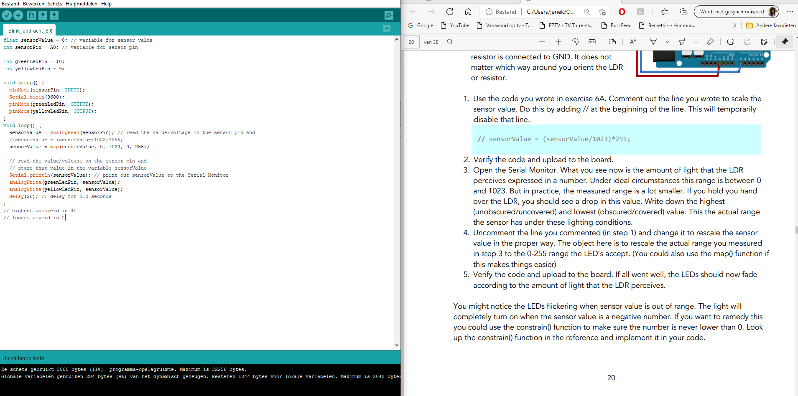
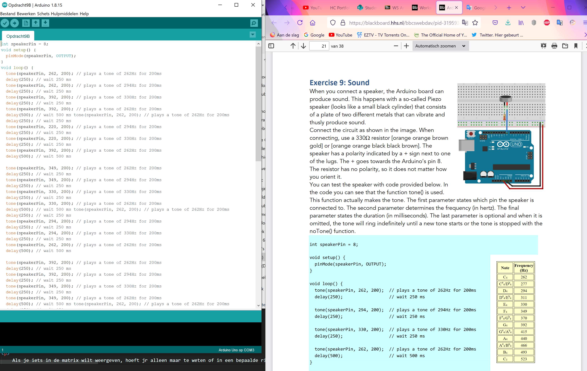
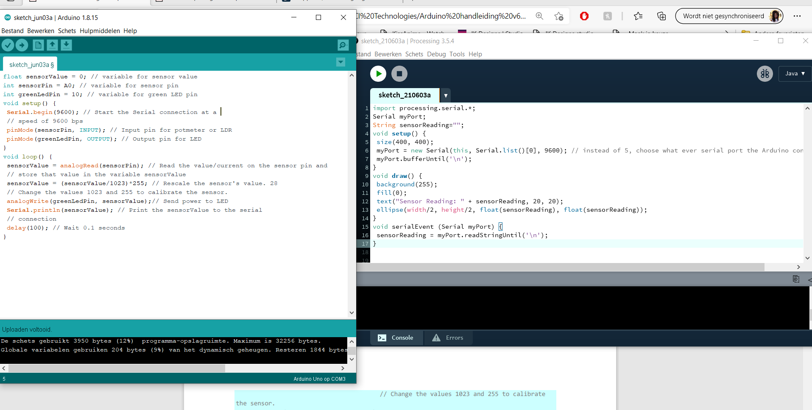
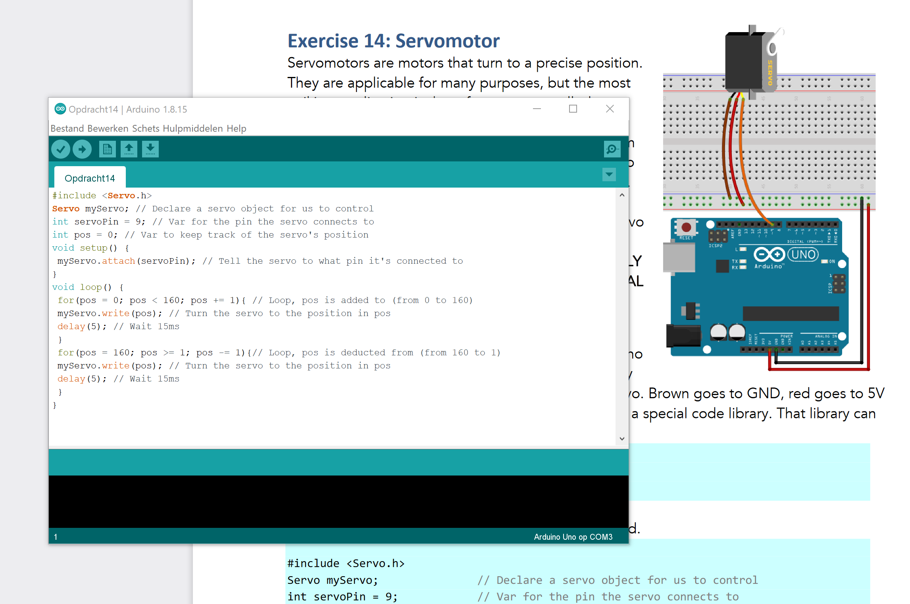

Arduino assignments
Arduino Uno
Arduino is een open-source elektronicaplatform voor het bouwen van prototypes.
Het is gebaseerd op flexibele, gebruiksvriendelijke hardware en software. Bestemd voor kunstenaars,
ontwerpers en iedereen die geïnteresseerd is in het creëren van interactieve objecten of omgevingen.
Arduino bestaat uit een open-source microcontroller en een software-omgeving om het in te programmeren.
Ik heb opdrachten gemaakt die mij kennis laat maken met de mogelijkheden van Arduino.
In totaal heb ik 14 opdrachten gemaakt maar er zijn alleen een aantal opgenomen voor deze portfolio website.
Daarbij zijn helaas niet alle opdrachten gelukt.
Klik hier om de opdrachten te bekijken
assignment #B3: BLINK MULTIPLE LEDS ✅😄

De lampjes groen en geel wisselen elkaar af, met behulp van de arduino.
assignment #C4: FADE LED –ANALOG OUTPUT ✅😄

Volgens de arduino code is gaat de ene LED langzaam aan en de andere gaat tegelijkertijd uit.
assignment #C6: : CONTROLLING A LED WITH A POTMETER ✅😄
Volgens een sensor genaamd potmeter laat ik de lampjes vervagen als ik aan de sensor draai.
assignment #A7: LED MATRIX ✅😄
Als je iets in de matrix wilt weergeven, hoeft jr alleen maar te weten of in een bepaalde rij of kolom de LED's aan of uit zijn. Als u bijvoorbeeld een blij gezicht wilt laten zien dan voer je bepaalde code uit. Een smiley en een fronsend gezicht moeten elkaar elke seconde afwisselen.
assignment #8: CONTROL THE LED WITH LIGHT ✅😄
Met een sensor Light Sensor en de arduino code verander ik de lampjes met licht. Dit doe ik met een LDR (Light Dependent Resistor) en een variabele weerstand die de hoeveelheid licht meet. Dit is vergelijkbaar met de sensor die wordt gebruikt om straatverlichting aan te doen als het buiten donker wordt
assignment #C9: SOUND❌😭
Helaas was deze opdracht niet helemaal gelukt. Het geluid werkt niet
Wanneer je een spealer aansluit, kan je met het Arduino-bord geluid maken. Dit gebeurt met een zogenaamde Piezo-speaker die bestaat uit een plaat van twee verschillende metalen die kunnen trillen en zo geluid maken.
assignment #C11: DISTANCE❌😕
Helaas was deze opdracht niet helemaal gelukt

Voor het meten van afstand gebruiken ik een Ultrasonic Proximity Sensor. Deze sensor werkt door een puls van ultrasoon geluid uit te zenden (geluiden met een hogere frequentie dan mensen kunnen horen) en luisteren vervolgens naar de terugkerende echo van dit geluid als het weerkaatst van objecten voor de sensor.
assignment #D12: ARDUINO AND PROCESSING ✅😄
Hier gebruik ik het Arduino-bord als input voor de computer door een verbinding te maken tussen Arduino en een programma genaamd "Processing". Processing is een programmeeromgeving die geweldig is voor het maken van prototypes van interactieve ervaringen.
assignment #B13: BUTTONS ❌😭
Helaas is deze opdracht mij niet gelukt
Hier gebruik ik het Arduino-bord als input voor de computer door een verbinding te maken tussen Arduino en een programma genaamd "Processing". Processing is een programmeeromgeving die geweldig is voor het maken van prototypes van interactieve ervaringen.
assignment #B14: SERVOMOTOR ✅😄
Servomotoren zijn motoren die naar een precieze positie draaien. Volgens de arduino code zou de servo motor van links naar rechts en weer terug moeten draaien.